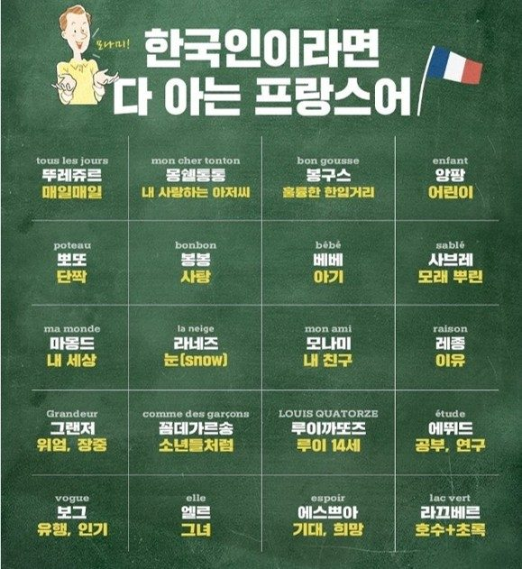

🇫🇷 프랑스 문화
프랑스어 시벨롬,
알고 보니 이런 문제가 있었다
한국인들이 유독 좋아하는 프랑스어 시벨롬.
프랑스인들이 진짜 쓰는지 알고 싶으신 거죠?
프랑스어 시벨롬은 si bel homme, 잘생긴 남자라는 뜻입니다. 틀린 말은 아니지만 프랑스에서 그대로 쓰면 어색하게 들려요. 소리, 표기법, 문법 세 가지를 뜯어보면 그 이유가 보입니다.
먼저 읽는 요약
프랑스어 시벨롬은 si bel homme, 잘생긴 남자라는 뜻입니다. 틀린 말은 아니지만 프랑스에서 그대로 쓰면 어색하게 들려요. 소리, 표기법, 문법 세 가지로 뜯어보면 그 이유가 보입니다.
- si, bel, homme 세 단어를 나눠 보기
- beau 가 bel 로 바뀌는 이유 (연음)
- 한글 표기가 지워 버리는 정보
- 프랑스에서 실제로 쓰는 말과 안 쓰는 말
프랑스어 시벨롬, SNS에서 한 번씩 보이는 단어예요. "Si bel homme"를 한글로 읽으면 시벨롬이에요. 발음이 한국어 비속어처럼 들린다며 관련 콘텐츠들이 정말 많은데요.
최근에도 아이돌 코르티스 멤버들에게 이 표현을 시켜보는 쇼츠 영상이 화제였어요.
C'est qui, ce bel homme à cheval ?
[세끼, 스벨롬 아슈발]
직역: 이 말 타고 있는 꽃미남은 누구야?
다들 듣자마자 당황하면서 "이거 욕 아니에요?" 를 외쳤죠 ㅋㅋㅋㅋㅋ
그런데 단순히 "발음이 웃기다"보다 더 큰 문제가 있어요. 실제로 프랑스에서 이 말을 그대로 쓰면 어색하게 들린다는 거예요.
끝까지 읽으시면,
프랑스어 시벨롬 하나로 프랑스어 발음 규칙 전체가
어떻게 작동하는지 감이 잡히실 거예요.
그럼 프랑스에서 잘생긴 남자가 지나가면 실제로 "Si bel homme! [시벨롬!]"이라고 외칠까요? 정작 프랑스인들은 좀 갸우뚱할 거예요. 틀린 말은 아니에요. 근데 자연스러운 말도 아니거든요.
오늘은 이 단어를 소리, 표기법, 문법 규칙 세 가지로 뜯어볼게요. 비슷한 결의 다른 예시들도 같이 살펴봐요.
시벨롬은 무슨 뜻일까, 단어 뜯어보기
Si bel homme [씨 벨롬므]는 세 단어가 붙은 말이에요.
- si 굉장히, 정말 (부사)
- bel 잘생긴 (형용사, beau의 변형)
- homme 남자 (명사)
si는 "매우"라는 뜻의 très와 결이 달라요. très는 중립적인 강조인 반면, si는 감탄이 섞인 강조예요.
Il est très beau. 그는 매우 잘생겼다
중립적인 사실 전달
Il est si beau ! 그는 진짜 잘생겼다
개인적인 감탄
왜 beau가 아니라 bel일까
진짜 핵심은 여기예요. beau는 원래 명사 앞에 오는 형용사예요. 근데 모음이나 무음 h로 시작하는 남성 명사를 만나면 형태가 bel로 바뀌어요.
un beau garçon 잘생긴 소년
자음으로 시작, beau 그대로
un bel homme 잘생긴 남자
homme가 무음 h로 시작, bel로 변신
이걸 liaison(연음)이라고 불러요. [보 옴므]가 아니라 [벨 롬므]로 이어지는 이유예요.
"시벨롬"은 사실 프랑스어 발음 원리를 압축적으로 보여주는 단어예요. 근데 한국에서는 의미보다 "재밌는 발음" 자체로 먼저 퍼지며 일종의 고유 명사처럼 된 거예요.
같은 연음 현상이 사실 우리에게 익숙한 단어에도 숨어 있어요. mon ami (모나미) 도 한국에서는 꽤 익숙한 표현이죠. mon [몽]과 ami [아미]가 연음되면서 [모나미]로 들려요. 근데 한글 표기 "모나미"만 보면 이게 원래 두 단어였다는 게 전혀 안 보인다는 거죠!
표기에서 악센트나 띄어쓰기 정보가 생략된 채로 굳어지면, 음성이 실제로 어떻게 만들어지는 소리인지가 사라지는 거예요.

프랑스어 시벨롬도 마찬가지예요. [씨벨롬]이라는 소리 자체만 한글로 떼어놓고 보면, beau가 bel로 바뀌는 연음 규칙이 안 보이죠.
이런 "악센트와 연음 표기가 빠지면 발음이 통째로 달라지는" 사례, 예전에 프랑스어 키보드를 설치하면서 직접 비교해서 릴스로 만든 적이 있어요.
- café에서 accent aigu(é)가 빠지면 [카프]가 돼요.
- crêpe에서 accent circonflexe(ê)가 빠지면 [크르프]가 돼요.
- comme des garçons도 ç의 cédille이 빠지면 [갸르꽁]으로 끝소리가 통째로 바뀌어버려요.
프랑스어 시벨롬과 같은 원리예요. 표기 하나, 연음 규칙 하나가 빠지면 소리 자체가 달라지는데, 한글 표기만 보고는 그 차이가 전혀 안 보이는 거죠.
프랑스에서 실제로 쓸 수 있는 말일까
si bel homme이 어색한 진짜 이유는 문법 구조에 있어요. "C'est + 명사" 구조에서는 si를 잘 안 씁니다.
C'est un bel homme ✅
C'est un très bel homme ✅
C'est un si bel homme ❌
대신 감탄할 땐 이렇게 말해요.
Il est si beau ! / Il est tellement beau !
Quel bel homme !
즉 si bel homme 자체가 통째로 틀린 건 아니에요. 다만 한국에서 쓰는 방식, 누군가를 보고 그 자리에서 던지는 감탄사로는 잘 안 맞아요.
이렇게 프랑스어 시벨롬으로 인한 발음 문제, 알고 보니 연음, 악센트, 문법 규칙 세 가지가 겹쳐서 생긴 일이었어요. café나 crêpe처럼 악센트 하나로 발음이 바뀌는 단어들과 같은 결로 보면, "왜 이렇게 발음되지?"가 좀 더 선명하게 보여요.
프랑스어 시벨롬의 미스테리가 좀 풀리셨나요? 이제 새로운 프랑스어 단어를 보거나, 한국에서 흔히 쓰이는 프랑스어 단어를 새로운 눈으로 보실 수 있을 거예요. :)
김두우리, 16년차 프랑스어 FLE 전문 코치
한국 학생들이 어디서 막히는지 아는 사람이 씁니다. 1:1 맞춤 수업과 한불 통번역을 합니다.이력 보기
관련 칼럼